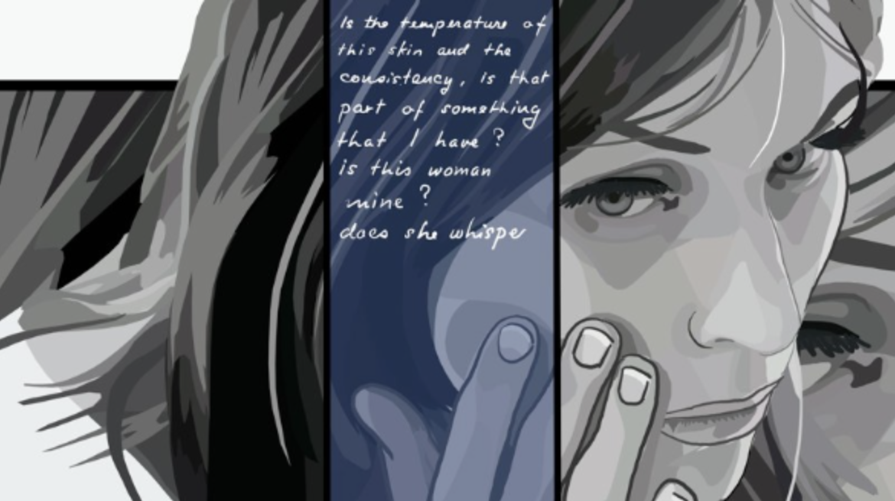

March 29, 2023

The characteristics of the first obstruction are 12 frames, answers, Cuba, and no set. Characteristics of the second obstruction are a miserable place, don't show it, Jorgen Leth is the man, and the meal without the woman. The third obstruction serves as a punishment for the previous obstruction and Leth is given complete freedom freestyle or back to Bombay. The fourth obstruction is cartoons which both directors despise. The last obstruction is created by Lars con Trier and Jorgen Leth will be credited as the director.
In response to each obstruction, Leth strives to achieve perfection and the depiction of a perfect human, yet the response he receives from Trier is everything but perfection. Leth also depends more on previous experience as in the second obstruction he uses something that he remembers as a horrid scene, and in the fourth obstruction, he uses the previous obstruction pieces. Leth is really good at using resources in general in order to cope with obstructions as he jots down many ideas and accomplishes the feat in his own way.
Referring back to the perfection and imperfection part, even though Leth wanted to depict perfection, he could not. No matter how hard Leth tried, Trier pointed out multiple imperfect parts. At the end of the day, every human is different, just as there isn't a clear way to depict perfection, so the topic for this overall film is an obstacle. However, this also depicts the perspective difference between the creator and the audience as we see that they don't have similar ideas. Just as Leth thought his second obstruction depicted something miserable, Trier didn't see it as such. We see Leth achieve the opposite response he wants to have from the audience.
Overall, my favorite piece created from the obstructions was the cartoon version. Cartoons are often regarded as immature as they are seen in children's books and movies, however, Leth created a mature version. He utilized special forms of art that were very enticing and aesthetic. I also really liked how the dialogue and set moved with the character, making each piece a work of art in itself.
 Return to Classes →